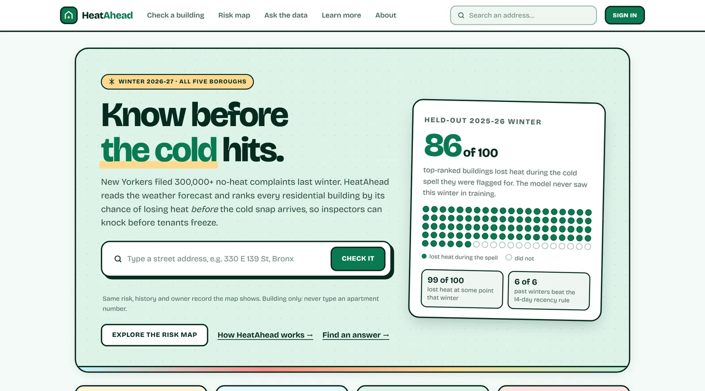

IBM Z Datathon · Oct 2026
Heat Ahead NYC
Predictive machine learning pipeline for urban infrastructure fail-safes on enterprise hardware.
Formed and led a six-person IBM Z Datathon team (recruiting members including graduate students) to predict heating-failure risks across NYC during extreme weather. Developed an end-to-end ML pipeline integrating historical city housing records with live weather feeds, mapping risk priority for municipal inspectors. Configured an enterprise IBM LinuxONE test environment and benchmarked batch inference performance at over 480,000 building records/sec.
Visit the live site ↗